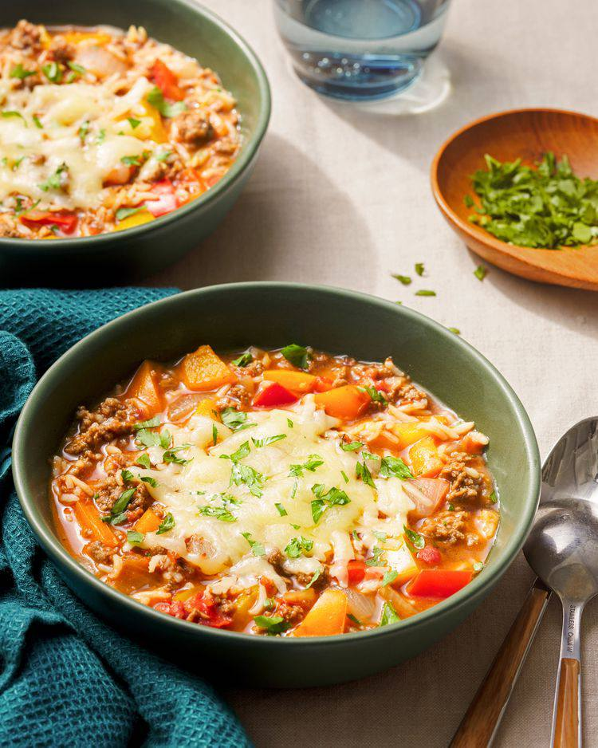

Stuffed Pepper Soup

Description
Stuffed peppers, deconstructed as soup and just as satisfying. With peppers, onions, garlic, ground beef, beef broth, and tomatoes, this soup has all the ingredients you typically find in stuffed peppers, but it’s even easier to make!
Ingredients
- 2 tablespoons olive oil
- 1 large yellow onion, chopped (about 2 cups)
- 3 cups chopped bell pepper, any color (from 3 bell peppers)
- 6 garlic cloves, chopped (about 2 tablespoons)
- 2 teaspoons smoked paprika
- 1 teaspoon kosher salt
- 1 teaspoon ground cumin
- 1 pound lean ground beef (85:15)
- 1 (15-ounce) can crushed tomatoes
- 4 cups beef broth
- 1 (8.8-ounce) package precooked microwavable white rice
- 6 ounces sharp white Cheddar cheese, shredded (about 1 1/2 cups)
- Chopped fresh flat-leaf parsley, for serving
Steps
- Heat the oil in a large Dutch oven over medium. Add the onion, bell pepper, garlic, paprika, salt, and cumin; cook, stirring often, until the vegetables are tender, about 8 minutes.
- Increase the heat to medium-high and stir in the ground beef. Cook, stirring often with a wooden spoon to crumble the meat into smaller pieces, until cooked through, about 6 minutes. If there’s a lot of fat in the pan, drain off most (but not all) of it. Stir in the crushed tomatoes, beef broth, and rice.
- Bring the soup to a boil over medium-high; reduce the heat to medium-low and simmer until the flavors meld, about 25 minutes.
- Divide the soup evenly among 6 bowls. Top evenly with cheese and garnish with parsley.